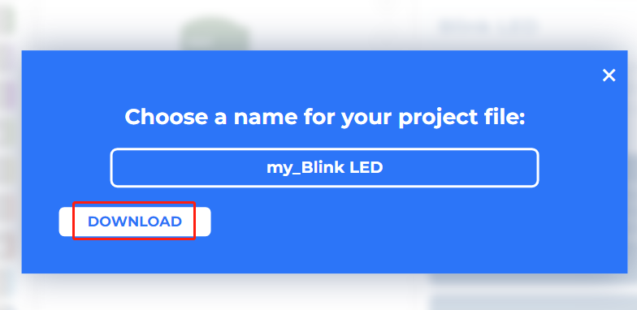
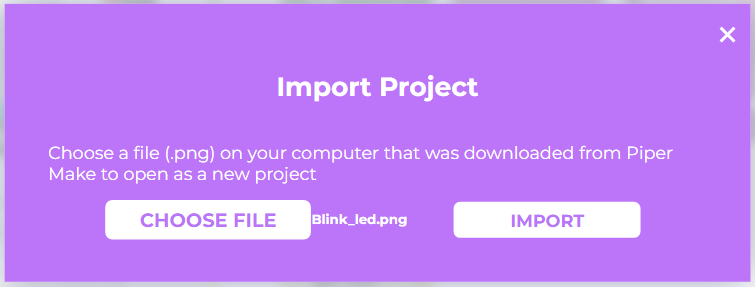
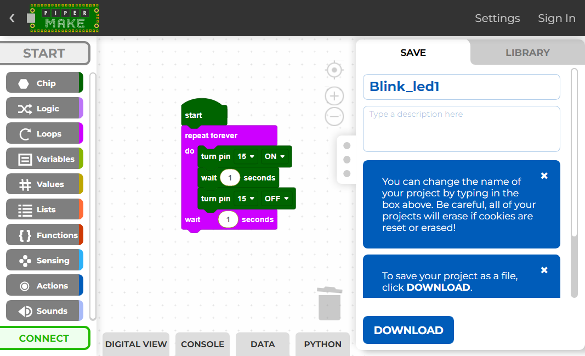

Note
Hello, welcome to the SunFounder Raspberry Pi & Arduino & ESP32 Enthusiasts Community on Facebook! Dive deeper into Raspberry Pi, Arduino, and ESP32 with fellow enthusiasts.
Why Join?
Expert Support: Solve post-sale issues and technical challenges with help from our community and team.
Learn & Share: Exchange tips and tutorials to enhance your skills.
Exclusive Previews: Get early access to new product announcements and sneak peeks.
Special Discounts: Enjoy exclusive discounts on our newest products.
Festive Promotions and Giveaways: Take part in giveaways and holiday promotions.
👉 Ready to explore and create with us? Click [here] and join today!
1.3 How to Save or Import Code?¶
Save the Code¶
After writing the code, you can change the code name and description, and then click the Download button to save the code locally or share it with others.

Then enter the file name and click the Download button again to save the code as a .png file.

Import the Code¶
In Piper Make’s home page, click Import Project.

Select the .png file in the path euler-kit\piper and click Import.
Note that you need to download the SunFounder Euler Kit package first.
Or check out the code at Euler Kit - GitHub.

Now you can see the file you imported.
